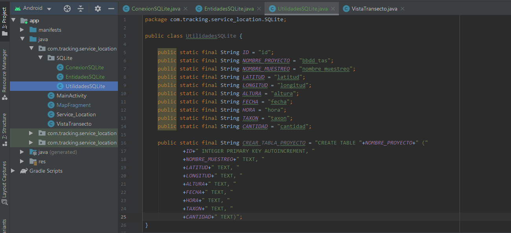
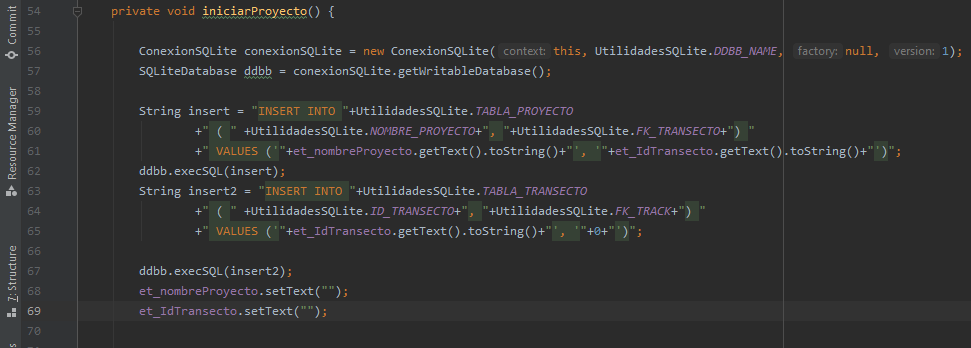

SQLite
crear BBDD
Es un sistema de gestión de bases de datos relacional RDBMS que interactúa sobre la BBDD, SQLite es de código abierto disponible en dominio público, mientras MySQL es código abierto pero propiedad de Oracle; SQLite es una base de datos sin servidor e independiente, es decir una BBDD integrada, por lo cual se ejecuta como parte de la aplicación, mientras MySQL requiere un servidor para ejecutarse.
Lo primero es Crear una clase para la conexión, entidades y utilidades, que ubicaremos en una carpeta, para mantener el orden.
En la clase indicada para la conexión se hereda de la clase SQLiteOpenHelper, mediante un extends, a solicitud de la bombilla de advertencia, implementamos métodos y el constructor.

En la clase Utilidades declaramos como constantes los nombres de los campos (Columnas) de la tabla, además la sentencia de creación de la tabla en SQL, en este caso al ID, se le agregaron las propiedades de INTEGER PRIMARY KEY AUTOINCREMENT
public class UtilidadesSQLite {
public static final String ID = "id";
public static final String NOMBRE_PROYECTO = "bbdd_tas";
public static final String NOMBRE_MUESTREO = "nombre_muestreo";
public static final String LATITUD = "latitud";
public static final String LONGITUD = "longitud";
public static final String ALTURA = "altura";
public static final String FECHA = "fecha";
public static final String HORA = "hora";
public static final String TAXON = "taxon";
public static final String CANTIDAD = "cantidad";
public static final String CREAR_TABLA_PROYECTO = "CREATE TABLE "+NOMBRE_PROYECTO+" ("
+ID+" INTEGER PRIMARY KEY AUTOINCREMENT, "
+NOMBRE_MUESTREO+" TEXT, "
+LATITUD+" TEXT, "
+LONGITUD+" TEXT, "
+ALTURA+" TEXT, "
+FECHA+" TEXT, "
+HORA+" TEXT, "
+TAXON+" TEXT, "
+CANTIDAD+" TEXT)";
}

Pasamos a la clase Conexión, en el método onCreate() indicamos la
ejecución del SQL,
utilizando la declaración de la clase utilidades.
Además en el método onUpgrade()
indicamos la ejecución de la sentencia para actualización, tener presente que se debe dejar un espacio
después de la declaración SQL
public class ConexionSQLite extends SQLiteOpenHelper {
public ConexionSQLite(@Nullable Context context, @Nullable String name, @Nullable SQLiteDatabase.CursorFactory factory, int version) {
super(context, name, factory, version);
}
@Override
public void onCreate(SQLiteDatabase db) {
db.execSQL(UtilidadesSQLite.CREAR_TABLA_PROYECTO );
}
@Override
public void onUpgrade(SQLiteDatabase db, int oldVersion, int newVersion) {
db.execSQL("DROP TABLE IF EXISTS " + UtilidadesSQLite.NOMBRE_PROYECTO);
}
}

En la clase en donde queramos se establezca la conexión a la BBDD, creamos un método
para tal fin, en este caso: conectarSQLite(). En el cual declaramos un objeto de la clase Conexión
y
lo inicializamos además indicamos la propiedad de escritura con getWritableDatabase(), y
agregamos los valores a las columnas con el método put.
Es importante tener presente que en el
método db.insert( nombreBBDD, campoUno, values),
el primer parametro es el nombre de la BBDD, seguido por el primer campo y value.
además al final se coloca el método setText con comillas para dejar en blanco las casillas
public void conectarSQLite(){
ConexionSQLite conexionSQLite = new ConexionSQLite(this, UtilidadesSQLite.NOMBRE_PROYECTO, null, 1 );
SQLiteDatabase db = conexionSQLite.getWritableDatabase();
ContentValues values = new ContentValues();
values.put(UtilidadesSQLite.NOMBRE_MUESTREO, etNombreProyecto.getText().toString());
values.put(UtilidadesSQLite.LATITUD, etIdTransecto.getText().toString());
Long idResultante = db.insert(UtilidadesSQLite.NOMBRE_PROYECTO, UtilidadesSQLite.NOMBRE_MUESTREO, values);
Toast.makeText(getApplicationContext(), "Numero de Registro = "+idResultante, Toast.LENGTH_LONG).show();
etIdTransecto.setText("");
etNombreProyecto.setText("");
}

Verificar SQLiteAdmin
Para verificar que la información se está cargando en la BBDD, buscamos en Device
File Explorer(pestaña inferior derecha), con la aplicación corriendo y el dispositivo conectado,
debido a que se toma del archivo que genera la aplicación en el dispositivo.
Siguiendo la ruta: data/data/NombreAPP/databases/NombreBBDD, seleccionamos y con click derecho
indicamos guardar(save as), a lo que se abre una nueva ventana e indicamos donde guardar
Ahora usando el software SQLite Administrator abrimos el archivo recién guardado, a través de la ruta Base De Datos/abrir (pestaña superior izquierda); en la ventana de búsqueda que abre el tipo de archivo debe ser cualquier fichero

Para realizar la consulta en la BBDD desde SQLite Administrator, escribimos la sentencia SQL en la ventana principal, en este caso: select * from NombreBBDD y damos click en el botón de ejecutar consulta (cilindro con el engrane, parte superior centro-derecha)
La información es desplegada como se observa en la siguiente imagen